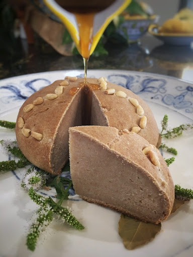

Libum:
A "cheesecake" made with ricotta or fresh cheese, often sweetened with honey and sometimes flavored with bay leaves.

“الله سوريا جبنة وبس”
— Someone, Somewhere, Someday
Ingredients:
- 3.5 cups of goat's ricotta cheese
- 3 1/4 cups of whole wheat flour
- 2 eggs
- 1 cup of either honey or pomegrante, grape or date syrup
- 1/2 tsp salt
- Bay leaves (optional, for flavor)
- Pine nuts
Steps to Make Libum:
- Preheat the Oven: Preheat your oven to 375°F (190°C).
- Mix Ingredients: In a bowl, combine the ricotta cheese, flour, egg, honey, pine nuts, and salt. Mix until a soft dough forms. If the dough is too sticky, add a little more flour.
- Shape the Bread: Form the dough into small rounds or patties. If using bay leaves, you can place a small piece of bay leaf under each round on the baking sheet for added flavor.
- Bake: Place the shaped dough on a baking sheet lined with parchment paper. Bake for about 20-25 minutes or until the tops are golden brown.
- Drizzle with Honey: Once baked, let the Libum cool slightly, then drizzle with additional honey before serving.
Enjoy!
Previous: Olivae Conditae